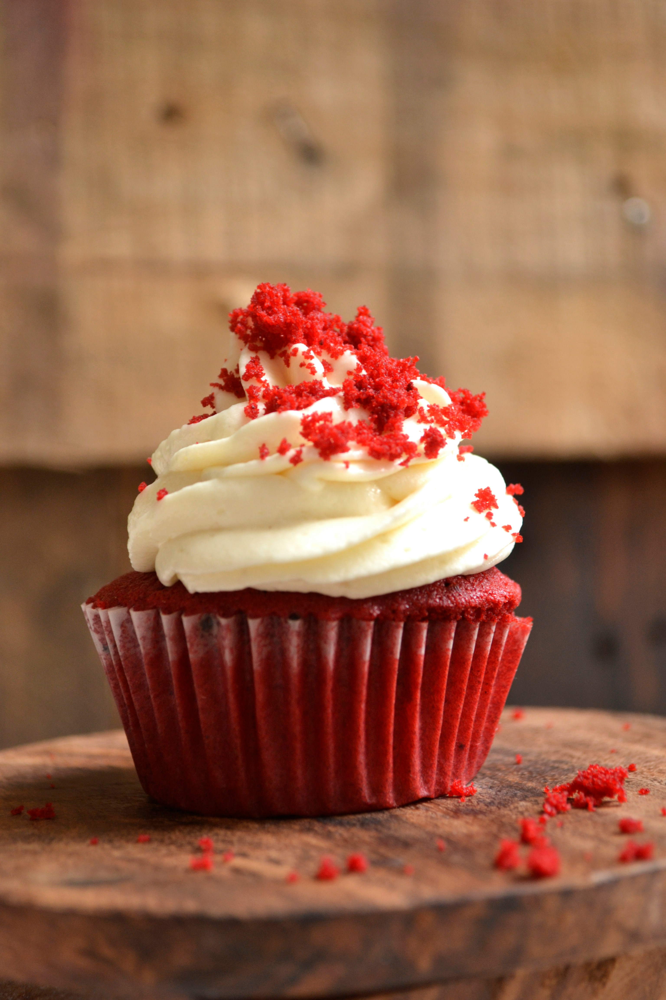

Cupcakes

Description
These cupcakes are light, fluffy, and packed with flavor. Perfect for any celebration or just a sweet treat to enjoy. With a variety of flavors and toppings, you can customize them to your liking.
Ingredients
- 1 1/2 cups all-purpose flour
- 1 cup granulated sugar
- 1/2 cup unsalted butter, softened
- 1/2 cup milk
- 2 large eggs
- 2 teaspoons baking powder
- 1 teaspoon vanilla extract
- 1/4 teaspoon salt
Steps
- Preheat the oven to 350°F (175°C).
- Grease a 12-cup muffin tin or line with paper liners.
- In a large bowl, whisk together the flour and baking powder.
- In a separate bowl, cream the butter and sugar until light and fluffy.
- Beat in the eggs one at a time, then add the milk and vanilla extract.
- Gradually mix in the dry ingredients until just combined.
- Fill each cup with batter and bake for 18-20 minutes, or until a toothpick inserted into the center comes out clean.
- Allow to cool in the pan for a few minutes before transferring to a wire rack.
Back to Home